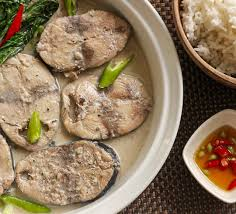

Ginataang Tambakol
Tuna in Coconut Milk
Home

Description
Ginataang Tambakol is a delicious dish with coconut milk as the main ingredient. Tambakol or yellowfish tuna can be fried or not and is usually enjoyed by many Filipinos due to its less bones unlike any other fish. It originated from Bicol region of Philippines as a spicy fish stew.
Ingredients
- ½ kilo tambakol (sliced to serving pieces)
- 2 cups coconut milk
- 1 bunch pechay or mustard leaves (chopped)
- 1 medium onion (chopped)
- 3 cloves of garlic (chopped)
- 1 thumb-sized ginger (chopped)
- 2 medium tomatoes (diced)
- 3 – 4 green chilies (whole)
- salt and pepper to taste
- fish sauce to taste
- oil (for frying)
Steps
- Massage the tambakol pieces with salt and pepper and let sit for at least 15 minutes.
- Heat some oil in a pan and fry the tambakol pieces until half-cooked. Remove the fish from the pan and set aside.
- On the same pan, sauté the onions, garlic, ginger and tomatoes for a few minutes. Gently crush the tomatoes for more flavor.
- Add the coconut milk and green chilies. Cook in low heat until boiling. Season with pepper and fish sauce. Cook for a few minutes until the sauce becomes thick.
- Add the fried fish and cook for 5 to 7 minutes until the sauce is greatly reduced. Add the pechay leaves. Cook until the leaves are slightly wilted.
- Transfer the ginataang tambakol to a serving plate and serve with hot steaming rice.